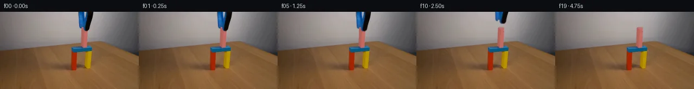
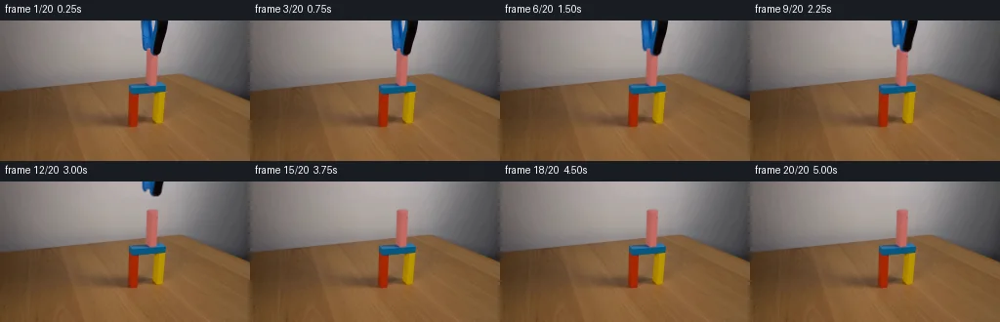
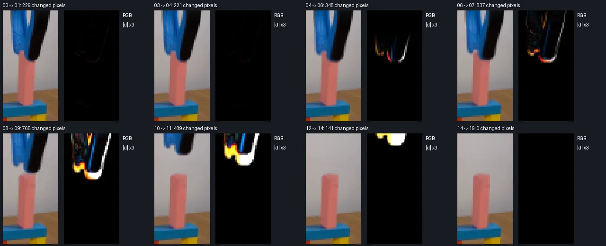

V0 · 初版 · 最终提交
![]()
Observable Generation Trace
把最终像素视频、Harness 冻结的每轮候选、真实工具事件和 Agent 自述放在同一页。可观测证据与模型自述分开标记，避免把“模型说它检查过”误当成真实工具调用。
![首帧]()
Static locked-off single-shot with fixed frame throughout filmed with constant framerate in real-time. The scene shows a realistic scientific demonstration. The scene only contains the described setup and actions. A pink block is carefully placed atop a simple structure of colorful blocks that resembles a gate by a blue-black grabber tool that then retracts upward.
首帧显示在左侧播放器初始画面。Track 权限、隔离和 tensor 一致性来自 run manifest，而不是 METHOD.md。
默认勾选初版和最终版；可选其他版本一起同步播放。仅检查图更新的连续重复快照已合并，回退旧视频仍保留为一次修订。
Observable events
来源：events.jsonl + run manifest
此 Track 禁止读取输出图片。逐轮预览由外部 Harness 自动冻结，只用于事后审计，生成 Agent 当时看不到这些页面。
Frozen candidates
每张图来自该 round 的真实 00 / 01 / 05 / 10 / 19 帧

pixels efda2b133d075f95 · code 35035dccf3ab9357
--- previous/generate.py
+++ current/generate.py
@@ -0,0 +1,187 @@
+"""Local source-pixel compositing; no model, network, or renderer is used."""
+from pathlib import Path
+import json
+import numpy as np
+from PIL import Image, ImageDraw
+from scipy.ndimage import map_coordinates, binary_dilation, distance_transform_edt, gaussian_filter
+from artifact_io import save
+
+ROOT = Path(__file__).resolve().parent
+H, W = 144, 256
+source = np.asarray(Image.open(ROOT/'first_frame.png').convert('RGB'), dtype=np.uint8)
+assert source.shape == (H,W,3)
+I = source.astype(np.float64)
+yy, xx = np.mgrid[:H,:W].astype(float)
+
+# Horizontal background reconstruction using only nearby, unoccluded source pixels.
+# This plate is consumed only in the footprint of the blue-black grabber.
+background = I.copy()
+for y in range(38):
+ xs = np.r_[np.arange(126,144), np.arange(174,191)]
+ for c in range(3):
+ fit = np.polyfit((xs-158)/32, I[y,xs,c], 2)
+ background[y,143:175,c] = np.polyval(fit,(np.arange(143,175)-158)/32)
+
+# Antialiased silhouette for the hidden top/upper sides of the salmon cuboid.
+def polygon_mask(vertices, scale=8):
+ image = Image.new('L',(W*scale,H*scale))
+ ImageDraw.Draw(image).polygon([(round(x*scale),round(y*scale)) for x,y in vertices], fill=255)
+ return np.asarray(image.resize((W,H),Image.Resampling.LANCZOS),dtype=float)/255
+
+block_outline = [(150.0,30.3),(153.4,28.0),(161.7,28.8),
+ (160.2,65.7),(153.0,66.3),(148.8,63.8)]
+block_mask = polygon_mask(block_outline)
+# Continue source face colors from the first fully exposed horizontal row.
+face = I.copy()
+for y in range(27,38):
+ for x in range(148,164):
+ face[y,x] = I[38,min(max(x,150),160)]
+# The newly uncovered top is a small, brighter planar face.
+top_mask = polygon_mask([(150.0,30.3),(153.4,28.0),(161.7,28.8),
+ (161.6,30.7),(153.5,32.0)])
+for y in range(27,34):
+ for x in range(148,164):
+ top_rgb = np.array([189.,113.,113.]) + (x-154)*np.array([.6,.3,.35])
+ face[y,x] = face[y,x]*(1-top_mask[y,x]) + top_rgb*top_mask[y,x]
+behind = background*(1-block_mask[...,None]) + face*block_mask[...,None]
+
+# Detect the tool from source colors, restricted to the numerically measured ROI.
+r,g,b = I.transpose(2,0,1)
+roi = (xx>=143)&(xx<=174)&(yy<=36)
+core = roi & (((b-r>18)&(b-g>10)&(r<155)) |
+ ((r<105)&(g<105)&(b<110)))
+# Remove out-of-tool corner pixels and retain just a one-pixel antialias rim.
+footprint = binary_dilation(core,iterations=1)&roi
+# Keep known visible block pixels in the plate; reconstruct only the occlusion.
+visible_pink = (r-g>65)&(r-b>45)&(r>155)
+footprint &= ~visible_pink
+clean = I.copy()
+clean[footprint] = behind[footprint]
+# Strong source/plate differences define the actual extraction support.
+diff = I-clean
+support = footprint & (np.max(np.abs(diff),axis=-1)>2)
+clean[~support] = I[~support]
+diff = I-clean
+# Estimate alpha from the nearest interior source tool sample and the clean plate.
+interior = core & (np.max(np.abs(diff),axis=-1)>75)
+_, nearest = distance_transform_edt(~interior,return_indices=True)
+near_rgb = I[nearest[0],nearest[1]]
+direction = near_rgb-clean
+alpha_est = np.sum(diff*direction,axis=-1)/np.maximum(np.sum(direction*direction,axis=-1),1)
+alpha = np.where(support,np.clip(alpha_est,0.03,1),0)
+# Interior exact samples remain opaque. Recover premultiplied foreground from I=C*(1-a)+a*F.
+alpha[interior] = 1
+premul = I-clean*(1-alpha[...,None])
+premul[~support] = 0
+# Do not clip premultiplied colors: edge decontamination may have signed values,
+# and the exact source reconstruction remains valid before final RGB conversion.
+reconstructed = clean*(1-alpha[...,None])+premul
+assert np.max(np.abs(reconstructed-I)) < 1e-9
+
+# Displacement is limited to the pink silhouette and its immediate softened rim.
+# A subpixel placement is appropriate because the source is already at contact.
+warp_mask = gaussian_filter(binary_dilation(block_mask>.15,iterations=1).astype(float),.55)
+warp_mask *= (yy>=26)&(yy<=68)&(xx>=147)&(xx<=163)
+
+def seated_scene(down):
+ sy = yy-down*warp_mask
… diff truncated; 100 more lines …Final visual checks
Harness 保存的最终产物


Agent claims
以下文字由生成 Agent 撰写，不等同于工具证据
Inspection uses local Pillow/NumPy decoding and numerical RGB values only. No image viewing tool was used. Coordinates below are pixel coordinates, origin at upper left.
| Frame | Time (s) | Action |
|---|---|---|
| 00 | 0.00 | Exact source pixels; grabber holds the nearly seated pink block. |
| 01 | 0.25 | Begin final slow seating, less than 0.1 px downward. |
| 02 | 0.50 | Continue controlled seating, approximately 0.2 px total. |
| 03 | 0.75 | Finish seating, at most 0.35 px total. |
| 04 | 1.00 | Pause in contact; pink block upright and supported. |
| 05 | 1.25 | Begin opening/releasing the tapered grabber ends. |
| 06 | 1.50 | Finish a small separation of the tips; pink block stays fixed. |
| 07 | 1.75 | Start upward retraction slowly, around 1 px. |
| 08 | 2.00 | Retract upward approximately 4 px. |
| 09 | 2.25 | Retract upward approximately 8 px. |
| 10 | 2.50 | Retract upward approximately 14 px. |
| 11 | 2.75 | Retract upward approximately 21 px. |
| 12 | 3.00 | Retract upward approximately 28 px. |
| 13 | 3.25 | Retract upward approximately 34 px. |
| 14 | 3.50 | Tool clears the frame, approximately 39 px retraction. |
| 15 | 3.75 | Stable finished gate with the pink block on top. |
| 16 | 4.00 | Hold the stable result. |
| 17 | 4.25 | Hold the stable result. |
| 18 | 4.50 | Hold the stable result. |
| 19 | 4.75 | Final stable result; no camera change. |
The motion will be produced by local source-pixel layer extraction, local background/block-top reconstruction, subpixel compositing, and prescribed smooth tool translation. The supports and surrounding scene remain fixed. Numeric verification will check frame 00 equality, tensor/PNG agreement, contact/support consistency, tool departure, and temporal change locations. Inspection and transition sheets are artifacts for user review, not a claim of visual review by the agent.
This sequence was made entirely with local Python pixel operations using Pillow, NumPy, and SciPy. The only scene inputs were first_frame.png and prompt.txt. No external model, network access, renderer, reference image, mask, or subagent was used.
The source was decoded locally and inspected through numerical RGB samples and text maps of color classifications. No image Read/View tool was used, and no visual review is claimed. OBSERVATION.md was written before the generation script, with measurements and a frame-by-frame event plan.
The original photograph supplies the background, table, gate, block textures, and tool textures. Blue and dark RGB thresholds inside a measured tool region identify its interior. A one-pixel dilation includes its antialiased edge. Nearby unoccluded background samples supply a quadratic horizontal RGB fit behind the tool. The small occluded portion of the block is reconstructed using an antialiased cuboid silhouette, observed side colors from row 38, and a slightly lighter top face. These hidden surfaces are estimates; their true appearance is not available from the single frame.
The clean plate preserves all source pixels outside the tool's extraction support. For tool edge pixels, alpha is estimated by projecting the source-to-plate RGB difference toward the nearest interior tool sample. Premultiplied foreground values are recovered algebraically so that plate plus tool reconstructs the initial source exactly before motion. Frame 00 is also explicitly copied from the source.
The initial block is already at the beam, so the placement uses just 0.35 pixels of final downward seating over the first second. A local displacement field warps the source-derived block region with bilinear sampling. Its softened rim affects a few adjacent pixels at the contact edge. This small warp avoids a large descent that would pass through the beam. The supports remain exactly unchanged.
At 1.25–1.5 seconds the grabber tips separate slightly, with a prescribed inverse horizontal warp confined to their lower parts. The tool then moves upward smoothly, with prescribed displacement samples of 1, 4, 8, 14, 21, 28, 34, and 39 pixels. It fully exits by frame 14 (3.5 seconds). The block stays seated after the first second, and the final six frames are identical. The sequence uses deterministic image compositing and prescribed kinematics; it does not use a dynamics simulator or a learned video generator. Existing source lighting and table shadows are retained. Hidden geometry is estimated, with no newly simulated scene lighting.
generate.py reproduces the complete output locally.frames/00.png through frames/19.png are 20 RGB frames at 256 × 144, played at 4 fps for 5 seconds.pixels.npz contains pixels, a uint32 array with shape (144, 256, 20), packed as 0xRRGGBB.index.html is a standalone player containing the initial packed frame and lossless delta packets.inspection.png contains eight sampled full frames.transition_check.png contains enlarged numeric-source RGB crops and amplified absolute differences for eight transitions. These sheets were generated for user review and were not viewed by the agent.verification.json records packing, decoded PNG/tensor equality, embedded player data equality, motion parameters, and transition measurements.All twenty PNGs were independently decoded and compared against the tensor and generated frame array. Frame 00 matches the decoded source pixel for pixel. The player payload was decoded and replayed numerically and matches every tensor frame. Pixels outside x=142–175, y=0–69 are exactly unchanged. The gate supports below y=72 are exactly unchanged. The extracted tool alpha is zero from frame 14 onward, and numerical color inspection finds no residual blue or black tool pixels above the block in the final frame. Pink pixels continue to the beam at y=66, with blue pixels immediately below at y=67; the exposed block remains stationary after seating.